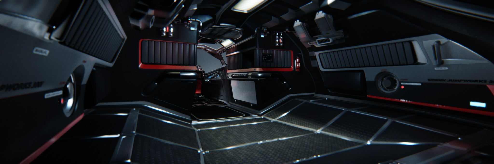
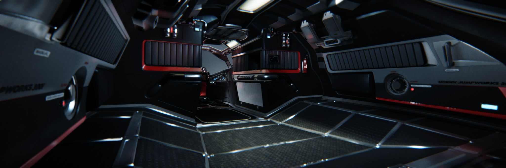

Small Ships
Sometimes you don't need a huge vessel to take care of the job. Sometimes all you need is get in your ship and solo out into the universe. We got you.

Sometimes you don't need a huge vessel to take care of the job. Sometimes all you need is get in your ship and solo out into the universe. We got you.
 

If you're going to travel the stars... why not do it in style? The 300i is Origin Jumpworks' premiere luxury spacecraft. It is a sleek, silver killer that sends as much of a message with its silhouette as it does with its weaponry.
The Aurora is the modern day descendant of the Roberts Space Industries X-7 spacecraft which tested the very first jump engines. The Aurora is the perfect beginner's ship: what it lacks in style it makes up for in ample room for upgrade modules.
Outfitted with a Behring REP-8 EMP Generator, the Avenger makes non-lethal suppression possible via a powerful electromagnetic wave capable of disabling any electronics within the blast radius. *This is the standard Avenger chassis with the Warlock EMP module pre-installed.*.
The Mustang Beta is made for long duration flights. The factory standard Tarsus Leaper Jump Engine enables the Beta to travel to the galaxy’s farthest systems with ease, while the ship’s unique Com4T living quarters will make the journey feel like you never left home.
Maybe going alone isn't your thing, well with medium sized ships you can take a small group of friends with you. From focused to general ships. We got you.

Freelancers are used as long haul merchant ships by major corporations, but they are just as frequently repurposed as dedicated exploration vessels by independent captains who want to operate on the fringes of the galaxy.

Drake Interplanetary claims that the Cutlass Black is a low-cost, easy-to-maintain solution for local in-system militia units. The larger-than-average cargo hold, RIO seat and dedicated tractor mount are, the company literature insists, for facilitating search and rescue operations.
The Constellation Andromeda, a multi-person freighter, is the most popular ship in RSI's current production array. Constellations are beloved by smugglers and merchants alike because they are modular, high powered... and just downright iconic-looking.
This multi-role luxury vessel features an exquisitely detailed hull design that balances performance and versatility. The 600i is designed with cutting-edge modular technology, allowing you to customize your ship for your needs.
Ok, we get it. You wanna go all out right? You want to get a full crew and go out there to make a name for yourself. What better way to do that then with one of our Capital sized ships.

The Starfarer is a dedicated fuel platform. It's designer to load, store and protect fuel stasis units. And while it excels at this, the Starfarer can also be used to ferry traditional bulk cargo pods.
Drake's Caterpillar has long proven to be a reliable, cost-effective multi-role vessel, capable of being outfitted for everything from mercantile operations to combat support. The Caterpillar is a freighter that doesn’t skimp on weaponry or customization.
The Anvil Carrack features reinforced fuel tanks for long-duration flight, advanced jump drive, and a dedicated computer for jump charting operations. On-board accommodations include crew medical and repair facilities, and a mapping-oriented sensor suite.
With an elegant, sleek exterior that belies its spacious interior, the 890 Jump is a true engineering marvel; crafted to impress from every angle by combining a unique, innovative design with the finest materials and the most advanced technology.